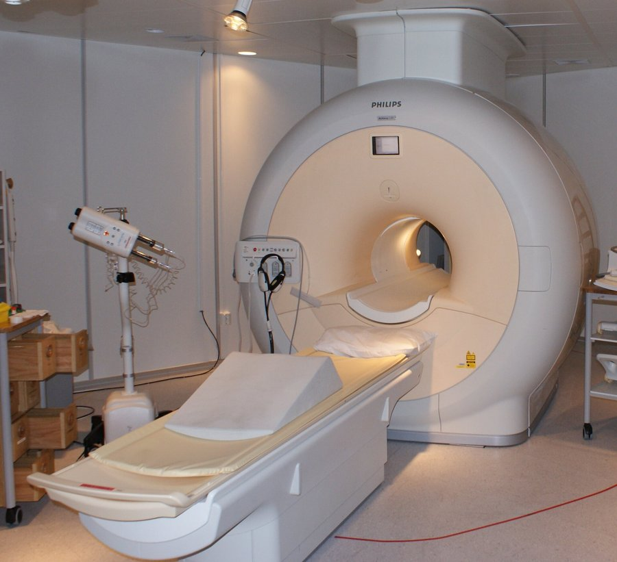

الرنين المغناطيسي
مغناطيس قوي (B0) يجعل بروتونات الهيدروجين (protons) في الماء والدهون تصطفّ باتجاهه.
نبضة راديوية RF pulse تُخرجها عن الاصطفاف، وعند رجوعها تُطلق إشارة يلتقطها coil فتتكوّن الصورة. لا توجد أشعة مؤيِّنة.
T1: الدهون بيضاء، والماء/السوائل داكنة (جيد للتشريح).
T2: الماء/السوائل بيضاء (جيد لكشف المرض والوذمة).
